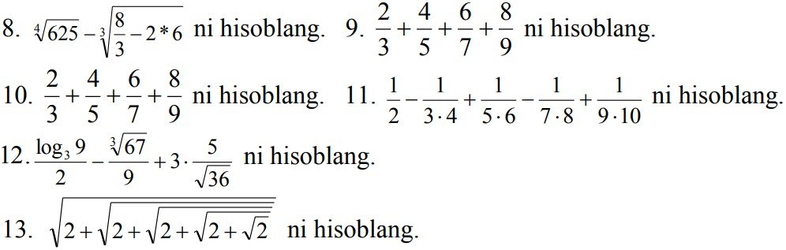

MS Excel 2010 da:
1. Y=ln2x+sinx funksiyaning grafigini hosil qiling.
2. 1,3,5,7,9 sonlarning ko‘paytmasidan 2,4,6,8,10 sonlarning ko‘paytmasini ayiring.
3. Berilgan 20 ta sonlarning yig‘indisini, boshqa 10 ta sonlarning ko‘paytmasi natijasiga nisbatini toping.
4. 10, 20, 30, 40 sonlarning kub ildizini hisoblang.
5. 900 sonini 34 foizini hisoblang.
6. 1, 2, 3, 4, 5, 6, 7, 8, 9 sonlarining kvadratlarini o‘rta arfimetigini hisoblang.
7. Quyidagi ifodani hisoblang: 345-45*5678+12:456-89+(34-8*9).
